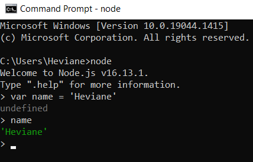

Introdução
O que é
A plataforma Node é um ambiente de execução JavaScript multiplataforma server-side.Construído usando o Chrome JavaScript Engine V8.
Permite usar JavaScript para automatizar coisas em um computador e construir servidores HTTP e WebSockets totalmente funcionais.
Ou seja, com node o javascript pode ser executado fora do browser.
Node é um interpretador de JavaScript assíncrono com código aberto e orientado a eventos, focado em migrar a programação do Javascript do frontend (client-side) para o backend (server-side), criando aplicações de alta escalabilidade (como um servidor web), manipulando milhares de conexões/eventos simultâneas em tempo real em uma única máquina física.
É possível executar código JS no terminal do servidor assim como executamos no DevTools do browser.

Exemplo de execução do Node via terminal (rodando localmente).
Alguns frameworks baseados em JavaScript rodam baseados no Node.js, por exemplo:
- React
- Vue
- Angular
Como funciona
Node.js trabalha com single-thread.Blocking: Síncrono, pois a entrega depende que todas as requisições estejam prontas para serem executadas.
Non-blocking: Assíncrono, pois a entrega é feita mesmo sem todas as requisições estarem prontas para serem executadas.
Trabalha com o Event-Loop que é a execução das requisições de forma assíncrona.
Thread é um pequeno programa que trabalha como um subsistema, sendo uma forma de um processo se autodividir em duas ou mais tarefas. Os diversos threads que existem em um programa podem trocar dados e informações entre si e compartilhar os mesmos recursos do sistema, incluindo o mesmo espaço de memória.
Multi-thread é o processo que executa as threads de forma síncronas.
Se alguma thread não executar quando invocada, o processo trava e espera até que a thread esteja pronta para ser executada, para assim poder seguir com o processamento.
Single-thread é o processo que executa as threads de forma assíncronas usando o Event-Loop
Se alguma thread não executar quando invocada, o processo continua com o restante das threads, e ao final volta (event-loop) para invocar novamente a thread que não estava pronta da primeira vez.
Vantagens
- Flexibilidade
- Leveza
- Escalabilidade
- Redução de custos, processamento
- Repositório grande - NPM (Node Package Manager)
- Mesma linguagem no frontend e backend